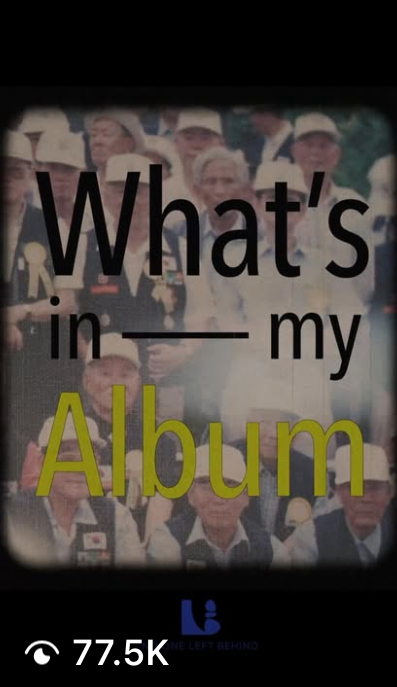
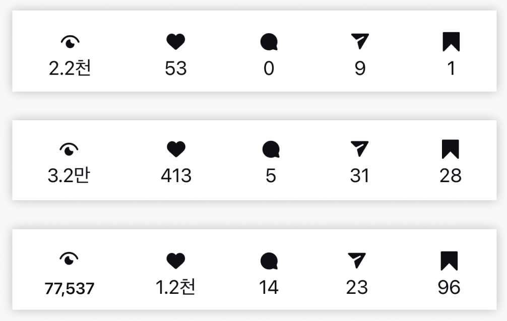
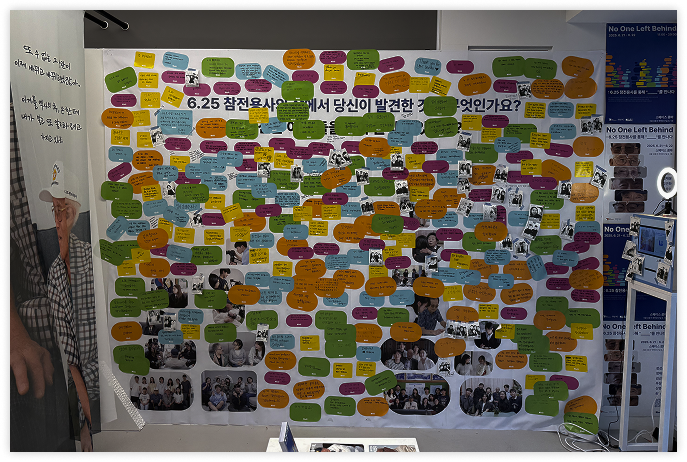

Veteran Interview Archive, Instagram-First Storytelling, and Offline Pop-up Exhibition
I worked on No One Left Behind with T&C Foundation, transforming veteran interview archives into Instagram-first content designed to reach Gen Z audiences (10s–20s).
The project was not simply about publishing interview content, but about making historically and emotionally heavy stories easier to enter, understand, and engage with on social platforms.
I developed a content system that combined concept-led storytelling, repeatable templates, and community-based channel operation, then extended accumulated digital assets into a two-day offline pop-up exhibition in Seongsu so online interest could evolve into a physical experience.
The project faced a dual challenge: message accessibility and operational sustainability.
First, the topic itself carried heavy historical and emotional context, which made it difficult to capture attention from Gen Z audiences on fast-moving social platforms. The issue was not that the stories lacked meaning, but that they required a more accessible and platform-native way of being introduced.
Second, limited resources made production slower and posting cadence less stable, increasing the risk of audience drop-off and inconsistent channel growth.
Finally, when expanding the project into an offline exhibition, the challenge became how to preserve the seriousness of the original message while designing an experience that encourages visitors to move from passive viewing to active participation.
Stories with heavy context do not become engaging simply because they are meaningful. For Gen Z audiences, the first barrier is not agreement, but entry.
Reach improves when complex stories are introduced through clear hooks, familiar formats, and lower-friction storytelling. To sustain attention over time, the project also needed a system that made publishing and interaction repeatable with limited resources.
Make difficult stories easier to enter—by translating archive-based narratives into platform-native content and extending them into a participatory offline experience.
I treated how the stories were introduced as the core strategy. Rather than assuming the archive itself would hold attention, I translated interview-based narratives into concept-led, lower-friction formats using clearer hooks, familiar platform language, and Instagram-native storytelling.
To reduce audience drop-off caused by inconsistent publishing, I built an always-on content system centered on repeatable Story templates, sustainable workflows, and community touchpoints such as reactions and comments. This made both publishing and interaction more consistent under limited production capacity.
I treated digital content as the entry point to deeper participation, then reconfigured accumulated story assets into a physical exhibition experience. The goal was to preserve the project’s core message while creating a more immersive and emotionally engaging way for visitors to connect on-site.
Reviewed early content performance patterns to identify which formats, hooks, and message structures generated stronger engagement from Gen Z audiences (10s–20s).
Defined the core challenge as accessibility, not relevance, and identified the need for a lower-friction storytelling system supported by repeatable production and communication routines.
Planned and produced Instagram-first content, built Story templates, and repackaged interview narratives into concept-led formats optimized for attention and shareability.
Operated the channel through consistent publishing and audience interaction, then extended digital stories into a participatory offline exhibition designed for understanding, empathy, and engagement.

Produced Instagram Reels content that reached 77.5K views

Analyzed Instagram performance data

Planned and executed an interactive offline pop-up exhibition